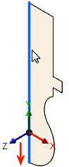

Vérifiez si la flèche rouge ne pointe pas vers une valeur négative à travers l'axe de la broche. Cette flèche indique le bas ou la direction Z de l'outil.

'''L'outil pointe vers une valeur négativeà travers l'axe de la broche'''